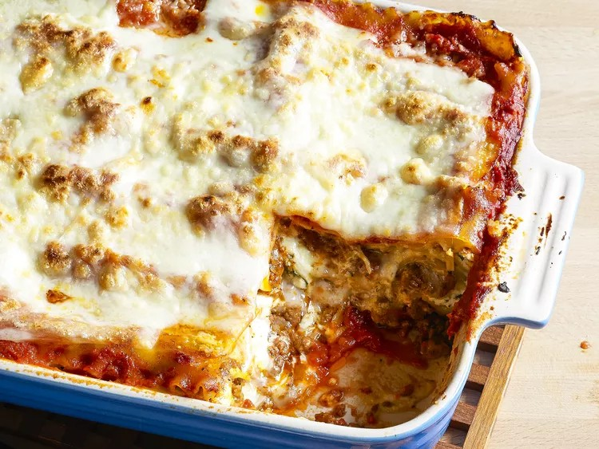

Lasagna

Description
Making lasagna can be time-consuming, but the results are well worth the wait.
You'll find a detailed ingredient list and step-by-step instructions in the recipe below:
Ingredients
- 1 pound sweet Italian sausage
- 3/4 pound ground beef
- 1/2 cup minced onion
- 2 cloves garlic
- 1 can crushed tomatoes
- 2 cans canned tomato sauce
- 2 cans tomato paste
- 1/2 cup water
- 2 tablespoons white sugar
- 4 tablespoons chopped fresh parsley
- 1 1/2 teaspoons basil leaves
- 1 1/2 teaspoons salt
- 1 teaspoon Italian seasoning
- 1/2 teaspoons fennel seeds
- 1/4 teaspoon ground black pepper
- 12 lasagna noodles
- 16 ounces ricotta cheese
- 1 egg
- 3/4 pound mozarella cheese
- 3/4 cup grated Parmesan cheese
Steps
- Gather all ingredients.
- Cook sausage, ground beef, onion and garlic in a Dutch oven over medium heat until well browned.
- Stir in crushed tomatoes, tomato sauce, tomato paste, and water.
Season with sugar, 2 tablespoons parsley, basil,
1 teaspoon salt, Italian seasoning, fennel seeds and pepper.
Simmer, covered, for about 1 1/2 hours, stirring occasionally.
- Bring a large pot o lightly salted water to a boil. Cook lasagna noodles in boiling water for 8 to 10 minutes.
Drain noodles, and rinse with cold water.
- In a mixing bowl, combine ricotta cheese with egg, remaining 2 tablespoons parsley and 1 1/2 teasoon salt.
- Preheat the oven to 375 degrees F or 190 degrees C.
- To assemble, spread 1 1/2 cups of meat sauce in the bottom of a 9x13-inch baking dish.
Arrange 6 noodles lengtwise over meat sauce, overlapping slightly.
Spread with 1/2 of the ricotta cheese mixture. Top with 1/3 of the mozarella cheese slices.
Spoon 1 1/2 cups meat sauce over mozarella, and sprinkle with 1/4 cups Parmesan cheese.
- Repeat layers, and top with remaining mozarella and Parmesan cheese.
Cover with foil: to prevent sticking,either spray foil with cooking spray or make sure the foil does not touch the cheese.
- Bake in the preheated oven for 25 minutes. Remove the foil and bake for an additional 25 minutes.
- Rest lasagna for 15 minutes before serving
- Enjoy your delicous world's best lasagna!